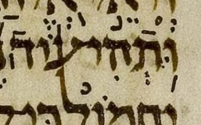
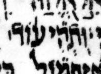

{kind=link}

| וּֽתְהִי
ע֨וֹד׀ וּ֥תְהִי־ע֨וֹד׀ |
6:10 | געיה not מרכא-מקף in μL, says BHQ’s implication |
Note that consensus has a rare and hard-to-understand phenomenon called “secondary מרכא” by Breuer.
This is one of only two strictly analogous cases listed here, though there are about 30 analogous cases if one includes those where the analogy is allowed to be less strict. What makes this case “rare among rare” is that, contrary to most cases, the מקף that is normally implicit is explicit (in the consensus). Interestingly, μL has some sort of disturbance where one would expect the מקף, suggesting that there might have been a מקף here that was erased.
See Breuer CoS sections 09.27, 9.37, and 11.06.rn2. (CoS = The Cantillation of Scripture.) (Note that an English translation of CoS is now available, a great boon to students of cantillation who cannot easily read the original in its modern Hebrew.)
In μY, like μL, there is no מקף.
The mark under the vav of ותהי was changed from מרכא to געיה in going from BHS to BHQ. This was a regression, in my opinion, since it leaves ותהי with no accent, only געיה. This is an uncharitable transcription.
U — M — page 398B, col 2, line 7
μA (Aleppo) (page 271v, col 2, line 5, word 1):

μY (Cambridge 1753) (page 0074A, col 2, line 19):
